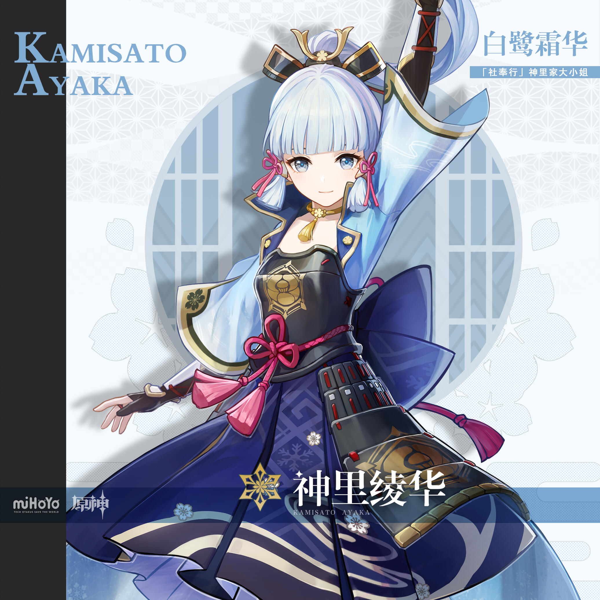

神里绫华角色攻略
角色背景
|

白鹭霜华 · 神里绫华 「如霜凝华，如鹭在庭 」 ========== 「绫华小姐虽是神里家的大小姐，却对我们大家关照有加。再麻烦的事她也会亲力亲为，要不是亲眼看到，我都不敢相信世上还有这样的名门小姐呢！」——花见坂的普通商人 稻妻「社奉行」神里家的大小姐。容姿端丽，品行高洁。 与出任家主的哥哥神里绫人一同打点家族，兄妹分工，哥哥掌管政务，妹妹则主理家族内外事宜。 绫华性情善良仁厚，待人礼貌得体，常亲自出面处理民间事务，与民众距离很近。她个性认真，追求将每一件事务都办得尽善尽美。人们为这份心意所感动，亲近于她，还赠予她「白鹭公主」的雅称。街坊邻里说起她，总会露出真心实意的赞叹之色。 受良好家教影响的绫华有着一颗纯如冰晶的至美之心。冬日里旋转冰晶，便能看到折射出的绚烂华彩。绫华的心灵亦是如此。她不只拥有华美拘谨的一面，心灵深处还埋藏着不为人知的温柔与可爱。 不过，想转动高悬于天穹的心，就得有攀上云端的能力。对那般能人异士，绫华可是非常愿意与之结交的——因为良友于她，有如霜尖点翠，剑上流光，将是极富命运感的一笔点缀。 |
天赋
普通攻击：神里流·倾

|

|
「神里」重击体力消耗仅需要20点，倍率却是单手剑角色中顶尖的水平，范围攻击的特点也使 其不容易漏伤害。从DPS上来看，「神里」使用A重击循环的伤害要明显优于A4次接重击的方 式。但「神里」直接使用A重击的前摇较长，在对付比较卡肉的怪物时会有明显的停顿感，连 续重击并不像「刻晴」那样丝滑，而普攻第4段则可以无缝接续重击。因此顾虑手感和体力管 理的玩家仍然可以选择A4+重击。「神里」的重击具有极高的Z轴，哪怕小体型怪物被击飞在 空中也能锁定命中，这意味着「神里」是目前少有的，与「温迪」完美契合的近战角色。 「神里」并不能像「刻晴」那样轻松地无缝A重击循环，按键时机错误会导致循环中断。使用 她的重击时只需要注意一个小技巧：在前一次重击斩击剑气完全消失的瞬间长按攻击键，即可 以最短的后摇接续第二次A重击。 |
| 进行至多五段的连续剑击，造成物理伤害 | 消耗20点体力进行重击，造成物理伤害 |
元素战技：神里流·冰华
 单从倍率上来看，「神里」的元素战技也是一个优秀的输出技能，奈何大招的伤害实在是太高了。元素战技的后摇较长，可以利用冲刺或
单从倍率上来看，「神里」的元素战技也是一个优秀的输出技能，奈何大招的伤害实在是太高了。元素战技的后摇较长，可以利用冲刺或大招取消，每次击中怪物产出5个冰元素微粒，施加强冰附着。其超高的微粒产出量和10秒CD（单人平均每秒1.5能量）有效地弥补了「 神里」大招需求80能量的缺点。 |
| 击飞周围怪物并造成冰元素范围伤害 |
代替冲刺：神里流·霞步
 该特性能够改变「神里」的冲刺动作，使其能够无视水面的减速进行高速移动，但会像「莫娜」的【虚实流动】一样被一些奇怪的障碍物和
该特性能够改变「神里」的冲刺动作，使其能够无视水面的减速进行高速移动，但会像「莫娜」的【虚实流动】一样被一些奇怪的障碍物和地形高度差卡住，也无法享受“冲刺体力减耗”类型的增益。松开冲刺键后，「神里」会对周围施加冰元素附着，也能够使水面冻结，这意味 着她可以经过长距离水面移动后在自己的冰面上恢复体力。注意渡过水域时，松开冲刺键一定要同时松开方向键，并及时用E或平A一次补 冰，否则极容易失足跌入水中。此外，「神里」获得持续5秒的冰元素附魔，每次附魔时间可打出3次重击，该附魔会被满命「班尼特」的 火附魔覆盖 |
| 隐入碎冰，化为激流快速移动 |
元素爆发：神里流·霜灭
 「神里」的核心输出手段，也是角色本身高上限低下限的主要原因，伤害机制为快照，取决于按下技能一瞬间的面板。总共造成19段切割和
「神里」的核心输出手段，也是角色本身高上限低下限的主要原因，伤害机制为快照，取决于按下技能一瞬间的面板。总共造成19段切割和1段绽放伤害，能够在5秒内倾泻出高达3690%的单体总倍率（8级天赋），普通小怪和精英基本扛不住一次完整的爆发，因此大招常常出现 伤害大量溢出的情况。【霜见雪关扉】会优先锁定距离最近的目标并停留在第一个碰到的怪物处，虽然该技能爆发极高，但也具有非常致命 的缺点。首先对于会瞬移的怪物，【霜见雪关扉】并不能跟踪怪物很远的距离，一旦怪物逃脱范围，后续伤害会直接丢失。如果怪物站位比 较分散，「神里」的大招很可能会锁定一个错误的目标，对着血量较少的怪物一顿输出，而血量较厚需要用大招处理的怪物毫发无伤。为了 减少此类失误，请确保释放大招前让「神里」尽可能靠近想要输出的目标，亦或使用强力的聚怪辅助。 |
|
向怪物释放持续行进的【霜见雪关扉】，对 碰到的怪物造成多段冰元素伤害，持续时间 结束后绽放造成额外冰元素范围伤害 |
固有天赋

|

|

|
||
|
60级突破获得。「神里」冲刺技能的启动体力消耗正好为10 点，之后消耗的体力按秒计算，因此只要确保冲刺的时间小于 1秒，松开冲刺后冰附着击中目标，「神里」的这次冲刺就不 会消耗体力，还会获得冰伤加成，对打重击有明显的帮助，也 优化了替代冲刺手感较差的缺点。 |
与「阿贝多」固有天赋【天才的发现】效果相同，能够节省树 脂的实用被动，收益略高于「莫娜」的被动。 |
简洁明了的增伤天赋，20级突破获得。 |
命座
「神里」的命之座是标准的主C命座，完全是为了提升自己的伤害而设计。其中2命和3命均为直接提升大招的倍率，而4命则是稀有的防御降低效果，不仅能提升自己的伤害，还可增益全队。
想抽取命座的玩家建议将以上三个命座作为主要目标。

|

|

|
|
「神里」只需要冲刺就能为自己附魔，因此该命座具有极高的 触发率。减少元素战技CD等于变相提升充能速度，更快地放 出下一个大招。 |
关键命座，直接提升大招的倍率，增强了对站位分散、碰撞体 积较大的多目标群伤能力，但对单体怪物，尤其是体型较小的 目标时，由于小型【霜见雪关扉】的分散特性，该命座伤害很 难打全。 |
关键命座，提升大招的倍率，相当于18%的大招伤害净提升， 对于依赖大招输出的「神里」来说也是较为关键的命座。 |

|

|

|
|
关键命座，提供高贵的减防属性。由于是给怪物施加的debuf f，减防不仅能够增幅自己的伤害，还能够buff队友，「神里」 的大招能够脱手输出，实际持续时间总共为11秒，这使得「神 里」作为大招流副C的思路更加实用。目前游戏内减少怪物防 御的手段非常稀少，在没有其他减防手段、面对同等级怪物的 情况下，该命座带来的全队伤害提升约为17.6%。 |
不做赘述。 |
满命的效果让人很容易联想到「莫娜」。「神里」本身的重击 倍率较高，虽然此命座加伤和其他伤害加成加法计算，巨额的 加伤数值仍然使得「神里」可以打出极高的重击爆发。奈何覆 盖率实在是太低，每隔10秒仅能加成一次重击，最适合发挥的 场景是扔完大招后打一次重击就立刻切人下场的速切玩法。 |
装备推荐
这套圣遗物，并与另一名冰系角色组队，在面对可冻结的怪物时拥有极高的基础暴击率，副词条和武器可以选择更多的爆伤与攻击力。但与「甘雨」不同的是，「神里」本身没有任何提升
暴击率的手段，使用【冰风】4不代表她一点面板暴击率都不要，考虑到怪物也不一定能被全程冻结，请确保携带此套圣遗物也至少有40%以上的面板暴击。「神里」对特定五星武器的需求
程度较高，下位替代的四星武器通常具有明显的差距，但笔者仍然只推荐有条件的玩家量力抽取【雾切】。
武器

|
|
圣遗物
- 词缀
- 「理之冠」：选择暴击率或暴击伤害；
- 「空之杯」：选择冰元素伤害加成或百分比攻击力；
- 「时之沙」：选择百分比攻击力；
-
其他副词缀：「神里」最好拥有40%的面板暴击率，满足该条件后可专注堆叠爆伤和攻击力。
此外，「神里」比较依赖大招，大招需要80能量，充能效率也是有效的属性，但不建议主C角
色亏损输出刻意去堆充能，这也是笔者没有将新圣遗物套装【绝缘之旗印】重点推荐的原因。
- 套装
-
 【冰风迷途的勇士】四件套：前文已经说明了「神里」不适合打融化流的原因。
【冰风迷途的勇士】四件套：前文已经说明了「神里」不适合打融化流的原因。
选择永冻流时，【冰风】4是唯一指定的毕业套装选择，其套装效果提供40%的
冻结暴击加成，能够加成「神里」的所有伤害，而双冰共鸣还额外提升15%，使
得0词条的「神里」打冻结怪物时就有高达60%的基础暴击率，圣遗物可以更多
地选择爆伤和攻击力。此外，「神里」可以与「甘雨」通用同一套圣遗物，降低
养成的成本。
-
 【冰风】2+【宗室】2散搭，追求极致的大招伤害或武器为【磐岩结绿】时使用。
【冰风】2+【宗室】2散搭，追求极致的大招伤害或武器为【磐岩结绿】时使用。
阵容搭配
「神里」是一位依靠冻结状态和大招进行输出的主C，因此她的队伍主要需要考虑水元素、第二位冰元素角色、护盾治疗、增伤减抗以及聚怪。根据以上特点，
笔者总结出「神里」的主流配队如下，本文仅介绍几个泛用性较高的阵容，欢迎补充。
-
永冻队（真的很好用，强力推荐）


-
纯冰队

总结
「神里绫华」是一位强度上限和颜值兼具顶尖水准的冰伤主C，完全可以胜任队伍的核心输出，也可以直接套用「甘雨」的永冻阵容体系和圣遗物降低培养成本，
值得所有喜欢该角色和缺乏主C的玩家培养。但角色下限较低，对武器比较挑剔，倍率极高的大招容易丢失伤害，对玩家的操作和判断有一定要求。
攻略视频推荐
攻略视频推荐
攻略视频推荐